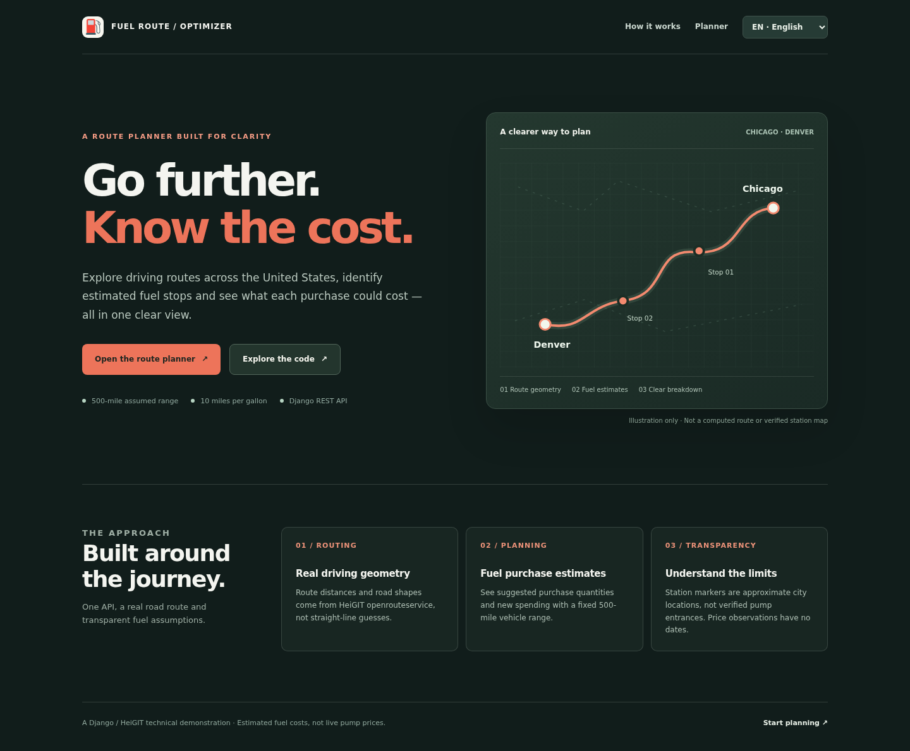
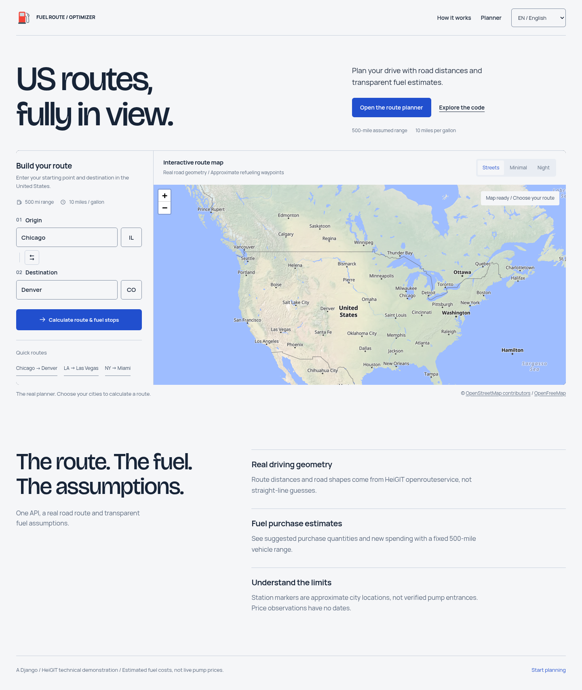
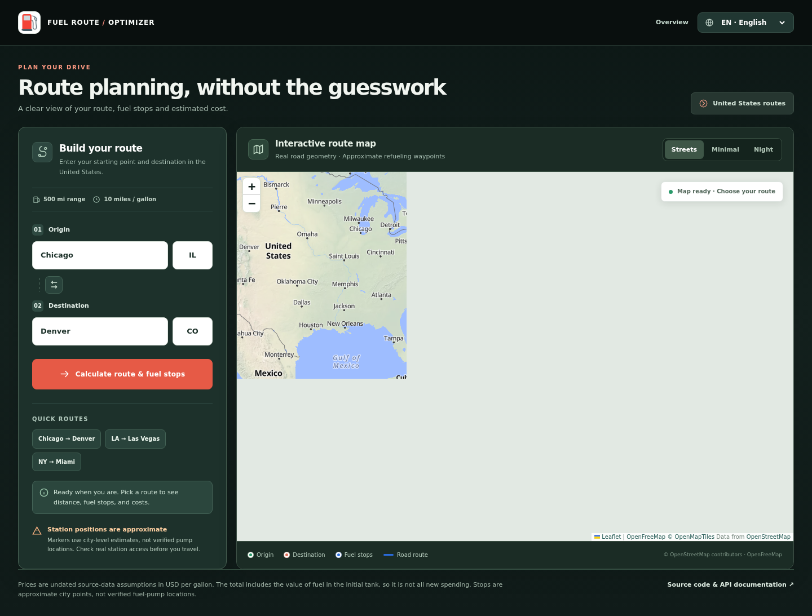
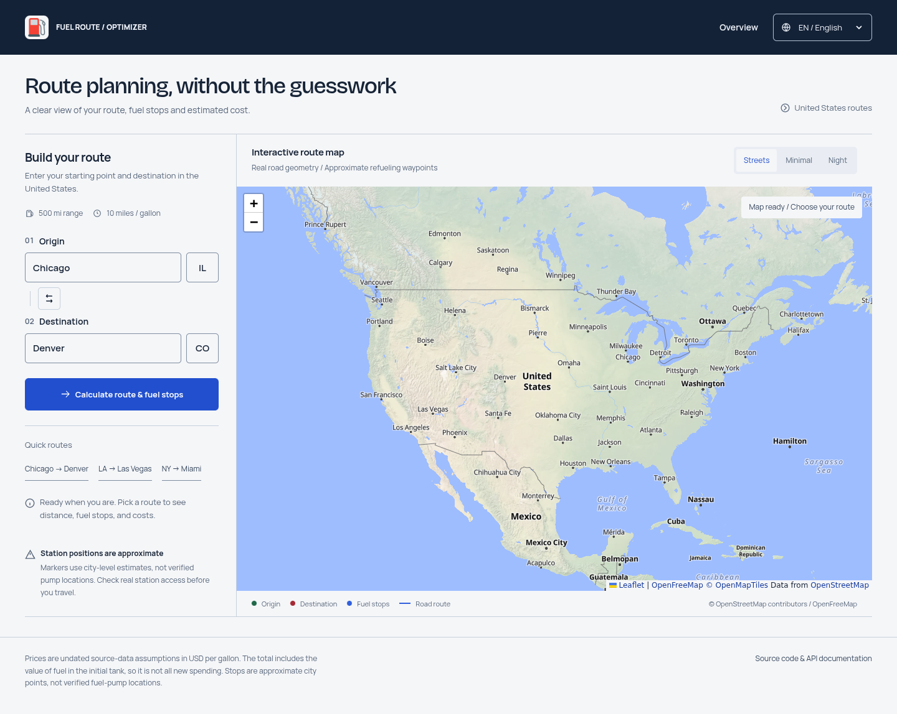
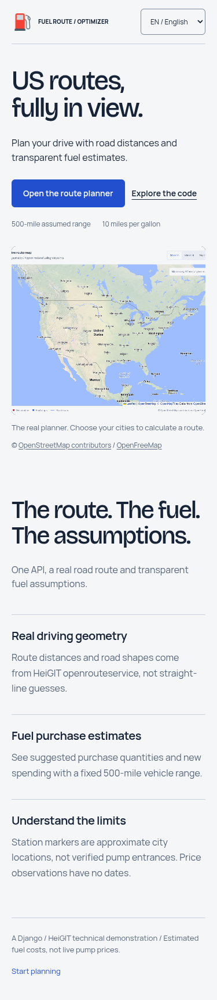
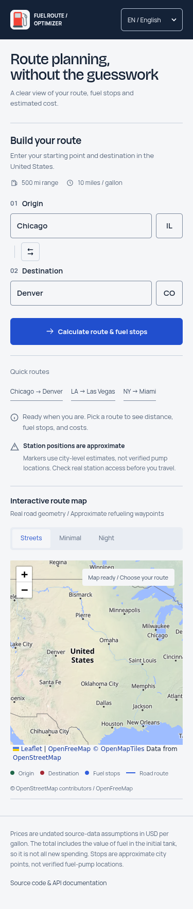

Fuel Route Optimizer: antes y después
Capturas reales de Django local. La vista inicial no contiene rutas calculadas ni datos comerciales.
Landing


Planificador


375 píxeles


Capturas reales de Django local. La vista inicial no contiene rutas calculadas ni datos comerciales.





